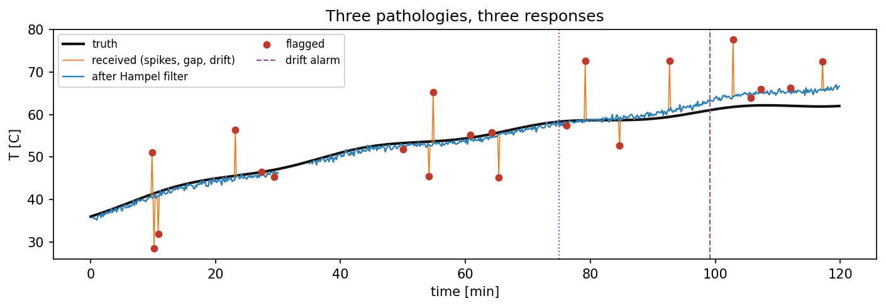
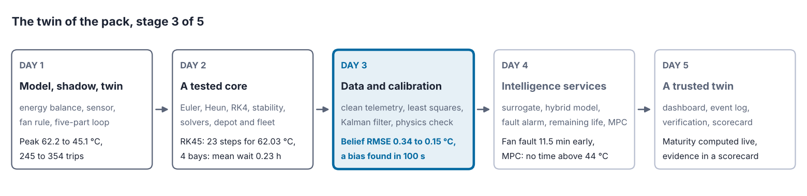
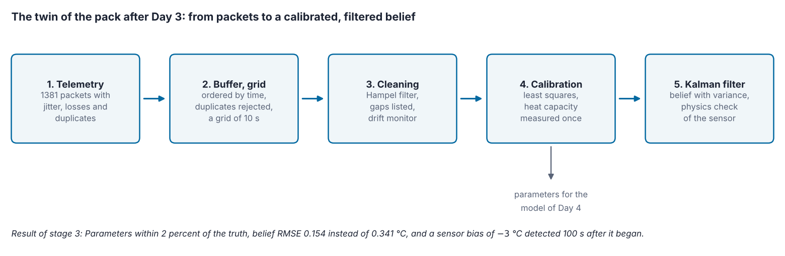
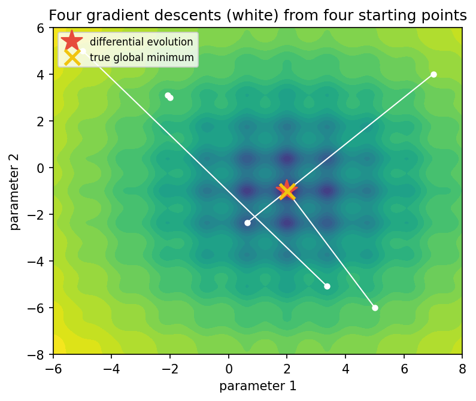

Overview
A twin is only as good as its data and its parameters. This day follows the readings of the battery pack from packets on a network to a regular time series and treats spikes, gaps and drift, each by its own rule. It then calibrates the model of the pack to its measurements with least squares [1]. It shows that some parameters cannot be told apart from temperature data alone, and how one independent measurement resolves this. It validates the model on data it has not seen. Finally it replaces the simple overwriting of the belief by a Kalman filter, which weighs the model against the sensor [2], and adds a physics check that detects a faulty sensor [3].
Day at a glance
flowchart LR A["From packets to a time series"] --> B["Spikes, gaps and drift"] B --> C["Calibration"] C --> D["A hidden symmetry"] D --> E["Validation"] E --> F["Kalman filter"] F --> S["The twin of the pack, stage 3"] S --> G["Your asset"]
Every method on this page is also written as Python code in the Colab notebook of the day. A Colab notebook is a document of text and Python code that runs in the web browser, with nothing to install. Its code is divided into numbered sections. Each orange box on this page names the section whose code carries out what the text above the box explains. The box says what to run and what to look at in that section, and its button opens the notebook at that place. The practice parts and the self-assessment of the day are in the interactive lab.
Python step 3: pandas data frames and time
Python code in the Colab notebook, right after Section 0 (setup). Open the notebook and run this step cell by cell: It consists of short pieces of Python code with their explanations, a quick check and three exercises. Topics: A data frame from packets · Sorting and removing duplicates · A time index and resampling · Filling gaps and smoothing.
The notebook continues with the hands-on sections. The study path, the daily task and the research assignment are on the day overview.
From packets to a time series
Day 1 built the twin of the pack: a model with datasheet parameters, a sensor whose readings overwrite the belief, and a fan rule that acts on the belief. Day 2 examined the simulation core of this twin. Runge-Kutta of order four reached an error of 0.0001 °C over one hour with only 36 evaluations of the model, and explicit Euler stayed stable only for steps below two time constants.
So far the twin has trusted two things that it never checked: the datasheet values of its parameters and every single reading of its sensor. This day checks both. It turns the packets of the telemetry into a clean time series, calibrates the parameters on measurements of the pack and replaces the overwriting of the belief by a Kalman filter, together with a physics check that notices a faulty sensor.
Readings reach the twin as packets over a network. Measurements that an asset sends to a distant receiver are called telemetry, and a packet is one message of this stream. Each packet of the battery pack carries a timestamp, the time at which the measurement was taken, and the values measured at that moment. These are the temperature, the current and the state of charge, the share of the full charge that is left. Packets arrive late, out of order or twice, and some never arrive.
A reading is also not the true value. In the telemetry of the pack, the temperature reading \(z_i\) of packet \(i\) is the true temperature plus two errors:
Here \(\tau_i\) is the timestamp of the packet, and \(T(\tau_i)\) is the true temperature at that time. The noise \(\varepsilon_i\) is a random error that differs from reading to reading, normally distributed with the mean 0 and the standard deviation \(\sigma\), as on Day 1. The square \(\sigma^2\) of the standard deviation is called the variance. The bias \(b\) is a constant offset, the same in every reading. The temperature sensor of this section has \(\sigma = 0.4\) °C and \(b = -0.6\) °C: On average it reads 0.6 °C too low.
The telemetry of the day comes from the trip of Day 1: two hours on the highway at 35 °C outside and without cooling, during which the temperature rises from 36 °C to 62 °C. The pack sends a packet stream from this trip. The time between two packets is drawn from a normal distribution with a mean of 5 seconds and a standard deviation of 2 seconds, an irregular timing that is called jitter. Six percent of the packets are lost, 2 percent are sent twice, and 5 percent change places with the packet after them. In this stream 1381 packets arrive, 65 of them out of order and 29 as duplicates, and the longest pause between two packets is 17.5 seconds.
The twin therefore keeps a buffer that orders the packets by the time of measurement, drops duplicates and waits a short while for late arrivals. The buffer of the twin rejects a packet for three reasons and counts each rejection by its reason, so that every intervention stays on record. A duplicate has a timestamp that was received before. A late packet is more than 120 seconds older than the newest packet received so far, and this waiting time is called the reordering window. A packet with a value that is not a finite number is rejected as well. The buffer holds at most 2000 packets, and when it is full, each new packet pushes out the oldest one. Such a store is called a ring buffer, and it keeps the memory of a twin bounded however long the twin runs. In this run the buffer accepts 1352 packets and rejects the 29 duplicates, and no packet is late.
On a slow network the messages of a group chat sometimes arrive out of order or twice. The chat app shows them in the order in which they were sent, not in the order in which they arrived, and it shows a repeated message only once. The buffer of the twin does the same with the packets of the pack, by their timestamps.
A model, however, needs values on a regular grid of time, so the buffered readings are resampled, and gaps are either filled with care or marked as missing. The grid has one point every 10 seconds: \(t_k = k\,\Delta t\) with the time step \(\Delta t = 10\) s and the step index \(k = 0, 1, \ldots, 719\). Resampling computes one value \(y_k\) for every grid time from the readings around it, and three schemes are compared.
Zero-order hold. The grid value is the last reading that has arrived: \(y_k = z_i\) for the last packet with \(\tau_i \le t_k\). The value is available at once, and it carries the full noise of a single reading.
Linear interpolation. The grid value lies on the straight line between the last reading before the grid time and the first reading after it:
The fraction is the share of the way from packet \(i\) to packet \(i+1\) that has passed at the grid time. The value mixes two readings, which reduces the noise, but it can be computed only after the next packet has arrived.
Window mean. The grid value is the mean of all readings of the last 30 seconds:
The sum runs over all packets whose timestamps lie in the window. Their number \(N_k\) is between five and six on average. Averaging removes most of the noise, but the mean describes the pack as it was about 15 seconds earlier, at the middle of the window.
Because the pack is simulated, its true temperature \(T_k\) at every grid time is known, and the error of each resampled value can be computed. Four formulas describe the errors of a series of \(n\) values:
The error \(e_k\) is the resampled value minus the truth. The mean error \(\bar{e}\), written with a bar, shows a systematic offset, because random errors of both signs cancel in it. The root mean square error, abbreviated RMSE, is the typical size of an error whatever its sign. The standard deviation, abbreviated SD, is the scatter of the errors around their mean, which is their random part. The three are linked by \(\mathrm{RMSE}^2 = \bar{e}^2 + \mathrm{SD}^2\). The first row of the table below confirms the link: \(0.619^2 + 0.396^2\)\({} = 0.383 + 0.157\)\({} = 0.540\), and \(\sqrt{0.540} = 0.735\).
| Scheme | RMSE (°C) | Mean error (°C) | SD of the error (°C) |
|---|---|---|---|
| Zero-order hold | 0.735 | \(-0.619\) | 0.396 |
| Linear interpolation | 0.681 | \(-0.606\) | 0.311 |
| Window mean of 30 seconds | 0.681 | \(-0.660\) | 0.169 |
All three series carry the bias of the sensor, about \(-0.6\) °C: It is in every reading and therefore in every average or interpolation of readings, so no resampling scheme can remove it. The schemes differ in their random part, from 0.40 °C for the zero-order hold to 0.17 °C for the window mean. The window mean pays with delay: Its mean error is the most negative, because the temperature rises while the mean looks back by about 15 seconds. Resampling is a choice between noise and delay, not a way to improve the data.
Daily figures such as the sales of a shop or the number of visitors of a website are often reported as a seven-day average. The average hides the random ups and downs of single days, but after a real change it needs several days to follow, because it still contains the days before the change. The window mean of the twin makes the same trade on a scale of seconds.
Four packets arrive at 36, 44, 49 and 57 seconds with the readings 40.0, 40.5, 40.1 and 40.6 °C, and the next packet arrives at 62 seconds with 40.3 °C. The grid time is 60 seconds. Zero-order hold takes the last reading before the grid time, 40.6 °C. Linear interpolation uses the packets at 57 and 62 seconds: The grid time lies \((60 - 57) / (62 - 57)\)\({} = 3 / 5\)\({} = 0.6\) of the way between them, so the value is \(40.6\)\({} + (40.3 - 40.6) \times 0.6\)\({} = 40.6 + (-0.3) \times 0.6\)\({} = 40.6 - 0.18\)\({} = 40.42\) °C. The window from 30 to 60 seconds holds the first four packets, and their mean is \((40.0 + 40.5 + 40.1 + 40.6)\)\({} / 4\)\({} = 161.2 / 4\)\({} = 40.30\) °C.
Python code in the Colab notebook, Section 1. Open Section 1 of the Colab notebook and run its three cells. In the first cell the function make_telemetry produces the packet stream, and the cell prints the number of packets, of out-of-order packets and of duplicates. In the second cell the class TelemetryBuffer orders the packets and counts every rejection in its dictionary rejected. In the third cell the functions zoh, lin and win are the three resampling schemes. The cell prints the table above with the columns RMSE_C and mean_error_C and draws the three series against the truth.
Spikes, gaps and drift
Three faults of real data need different treatments. A spike is a single reading far from its neighbours, often an electrical glitch; a median filter removes it. A gap is a period without readings; short gaps can be filled by interpolation, long ones should stay empty. Drift is a slow change of the sensor itself, for example as it ages; it cannot be seen in one reading, only by comparison with something independent, such as a second sensor or the model.
The table adds the other defects of a telemetry stream that this day meets. Quantisation is the last of them: A digital sensor reports its value as a whole number of steps of its converter, so every reading is a multiple of the resolution of the sensor.
| Data problem | What it is | What the twin does |
|---|---|---|
| Late packet | A packet that arrives after packets with later timestamps | The buffer sorts by timestamp and rejects a packet that is older than the reordering window |
| Duplicate packet | The same packet received twice, with the same timestamp | The buffer keeps the first copy and counts the others |
| Gap | A period without readings, for example during a network outage | A short gap is interpolated and flagged, and a long gap stays empty |
| Spike | A single reading far from its neighbours | A filter based on the median replaces it and flags it |
| Drift | A slow change of the sensor itself | A monitor raises an alarm, and the readings stay unchanged |
| Bias | A constant offset in every reading | No resampling or filtering removes it, and only a comparison with an independent reference reveals it |
| Quantisation | Readings in steps of the resolution of the sensor | Nothing restores the lost detail, and the step counts as part of the uncertainty of the sensor |
Interactive lab, Part A. Six symptoms in the data of a twin, each to be matched with the data problem behind it.
The spike filter of the twin is the Hampel filter, a median filter with a test. The median of a set of values is the middle one after sorting, and a single extreme value does not move it. For each value \(y_k\) of the resampled series the filter takes a window of 15 values: the 7 before it, the value itself and the 7 after it. It computes the median \(m_k\) of the window and the median absolute deviation, abbreviated MAD, which is the median of the distances of the window values from \(m_k\):
→ These formulas with numbers, step by step: Lab Part B, steps 1 to 4.
The factor 1.4826 turns the MAD into an estimate of the standard deviation of normally distributed noise, so the last line marks a value that lies more than three standard deviations from the median of its neighbours. A spike is replaced by the median \(m_k\), and its position is recorded as a flag, a mark that tells later users that this value was changed.
Reports on incomes and house prices usually give the median and not the mean. A single billionaire who moves into a small town raises the mean income of the town enormously and leaves the median, the income in the middle, almost where it was. The Hampel filter uses the median for the same reason: A single spike cannot move it.
For brevity the window has seven values instead of fifteen: 44.9, 45.3, 45.0, 51.2, 45.4, 45.1 and 45.6 °C, with the value under test, 51.2, in the middle. Sorted, they are 44.9, 45.0, 45.1, 45.3, 45.4, 45.6 and 51.2, so the median is 45.3. The distances from the median are 0.4, 0.0, 0.3, 5.9, 0.1, 0.2 and 0.3, and their median, the MAD, is 0.3. The limit is \(3 \times 1.4826 \times 0.3\)\({} = 4.4478 \times 0.3\)\({} = 1.33\) °C. The value under test lies 5.9 °C from the median, so it is a spike and is replaced by 45.3.
The same test with the mean and the standard deviation fails. The spike raises the mean to \(322.5 / 7 = 46.07\). The squared distances of the seven values from the mean add up to 31.03, their mean is \(31.03 / 7 = 4.433\), and the standard deviation is \(\sqrt{4.433} = 2.106\). The limit becomes \(3 \times 2.106 = 6.32\) °C, and the spike, \(51.2 - 46.07 = 5.13\) °C from the mean, passes as normal. The two medians, in contrast, hardly notice the spike.
Interactive lab, Part B. The Hampel test and the mean test side by side, with sliders for the value under test, a second value of the window and the factor of the limits. Each median, deviation and limit is shown one step at a time.
A gap asks for a decision and not for a filter. The pipeline of the twin lists every run of missing values with its start and its length and leaves the gaps empty. A short gap can be filled with the interpolation formula of the previous section, applied to the last value before the gap and the first value after it. Every filled value must be flagged, so that nobody takes it for a measurement. Whether a gap is short depends on the asset: The temperature of the pack changes by at most 0.6 °C per minute on this trip, so a few missing seconds hide nothing, while a missing hour can hide a whole heating phase. In the telemetry of the day the pipeline finds two gaps. The first grid point has no value, because no packet precedes it. The second is an outage injected between 1800 and 2100 seconds, reported with a start at 1810 seconds and a length of 290 seconds.
Drift cannot be found in the series itself, because every single reading looks plausible. A drift monitor therefore watches the residual \(r_k = y_k - \hat{y}_k\): the reading minus a reference value \(\hat{y}_k\) that does not depend on the sensor. In a real twin the reference is a second sensor or the prediction of the model. In this experiment it is the true temperature of the simulated pack. The monitor averages the last 60 residuals, 10 minutes of data, and raises an alarm when the average leaves a band of 1.5 °C:
Averaging over 60 values shrinks the noise by a factor of \(\sqrt{60} = 7.75\), almost 8, so that a slow shift stands out, at the price of a delay. The alarm calls for a person to check or replace the sensor. The readings themselves stay unchanged, because a twin that corrects a drifting sensor silently hides the failure until the sensor fails completely.
In the experiment the sensor begins to drift at 4500 seconds by 0.0018 °C per second, \(0.0018 \times 3600 = 6.5\) °C per hour. The alarm comes at 5950 seconds, \((5950 - 4500) / 60 = 24\) minutes later, when the drift has grown to \(1450 \times 0.0018 = 2.6\) °C. The delay has two causes. The drift first has to cancel the bias of the sensor, which holds the average residual at about \(-0.65\) °C, and then to lift the average to \(+1.5\) °C. This rise of \(0.65 + 1.5 = 2.15\) °C takes \(2.15 / 0.0018 = 1194\) seconds, about 20 minutes. In addition, an average over 10 minutes lags a steady rise by about 5 minutes.

In the figure the black line is the true temperature, the orange line the received series and the blue line the series after the Hampel filter. The red dots are the 21 values that the filter flagged. Twelve of them are the injected spikes, 6 to 14 °C away from the curve, and the filter found all of them. The other nine are ordinary readings about 1 °C from the median of their neighbours: A limit that is estimated from only 15 values is itself uncertain and also flags a few of these. The blue line is interrupted between minutes 30 and 35, where the outage left no readings. The dotted line at minute 75 marks the start of the drift and the dashed line at minute 99 the alarm. By the end of the trip the readings lie more than 4 °C above the truth.
Animation. A telemetry pipeline on one hour of data with jitter, duplicates, spikes and a gap between minutes 25 and 31. Choose the resampling method and switch the Hampel filter on and off; the readout compares the cleaned series with the truth.
In the animation 336 packets arrive, and the filter removes 12 spikes. With the filter on, the RMSE against the truth is 0.32 °C for the zero-order hold, 0.28 °C for linear interpolation and 0.21 °C for the window mean. With the filter off, these values are 1.05, 0.76 and 0.55 °C: A dozen spikes of 4 to 7 °C spoil every scheme. The sensor of the animation has no bias, so its RMSE shows the random part alone.
Python code in the Colab notebook, Section 2. Open Section 2 of the Colab notebook and run it. The function inject_faults adds the outage, the twelve spikes and the drift to the resampled series. hampel replaces and flags the spikes, gap_report lists the gaps, and drift_monitor returns the time of the alarm. The first cell prints the number of flagged values, the gaps and the time of the alarm, and the second cell draws the figure of this section. A short cell then prints the time of the alarm.
Calibration
Calibration adjusts the parameters of the model until its output matches the measurements of this specific asset. The model of the pack is the heat balance of Day 1: The current heats the pack, the air around it cools it, and the difference changes its temperature.
→ This formula with numbers, step by step: Lab Part C, step 1.
The left side is the rate of change of the temperature \(T\), in degrees per second. In the numerator, \(I^2 R_0\) is the heat that the current \(I\) produces in the internal resistance of the pack, and the second term is the heat that flows to the air. This flow grows with the distance of \(T\) from the ambient temperature \(T_{\mathrm{amb}}\), 35 °C here, and with the duty \(u\) of the fan, which lies between 0, off, and 1, full speed. Dividing by the heat capacity turns the heat flow in watts into a change of temperature. The current and the fan duty are inputs, known at every moment, and the four constants of the table are the parameters.
| Symbol | Meaning | Unit | True value | Datasheet guess | In the code |
|---|---|---|---|---|---|
| \(R_0\) | Internal resistance, which turns current into heat | ohm | 0.045 | 0.038 | R0 |
| \(m c_p\) | Heat capacity, mass times specific heat: the energy that warms the pack by one degree | J/K | 9000 | 10200 | m_cp |
| \(hA_0\) | Cooling conductance without the fan: the heat lost per degree above ambient | W/K | 2.2 | 2.9 | hA0 |
| \(hA_1\) | Additional cooling conductance at full fan | W/K | 12 | 8 | hA1 |
The true values belong to the simulated pack and are known only because the asset is simulated. The datasheet guess is the starting knowledge of the twin from Day 1, between 13 and 33 percent away from the truth. A model like this one, whose equation comes from physics and whose parameters come from data, is called a grey-box model.
Computing temperatures from given parameters is the forward problem, and a simulation solves it. Calibration is the inverse problem: The temperatures are given, and the parameters are sought. The data must be able to answer this question, so the experiment is designed for it. The pack runs for 90 minutes on the highway cycle, a pattern of driving in which the current swings between 34 and 46 amperes, and the fan alternates every 15 minutes between off and a duty of 0.85. A parameter can be estimated only if the data contain its effect, and a fan that never ran would leave no trace of \(hA_1\). The temperature is recorded every 10 seconds with a noise of standard deviation 0.35 °C and without bias, which gives \(n = 541\) measurements \(y_k\).
Least squares chooses the parameters that minimise the sum of squared differences between the simulated and the measured temperatures [1]. The parameter set is written \(\theta = (R_0, m c_p, hA_0, hA_1)\), and the simulation with these parameters gives a temperature \(\hat{y}_k(\theta)\) at every measurement time:
→ These formulas with numbers, step by step: Lab Part C, steps 2, 5, 8, 11 and 14.
The residual \(r_k\) is what the model leaves unexplained at step \(k\). The objective \(S\) adds the squared residuals, so that residuals of both signs count and large ones count most. The symbol arg min returns the parameter set at which \(S\) is smallest, and the hat marks an estimate. The quality of a fit is reported as \(\mathrm{RMSE} = \sqrt{S / n}\), the typical size of a residual. A value close to the noise of the sensor, 0.35 °C here, is the best that a correct model can reach.
In a school experiment a spring is loaded with weights, and its extension is measured for each load. The points never lie exactly on a straight line, and the spring constant is read from the line that passes closest to all of them, the line with the smallest sum of squared deviations. Calibrating the pack is the same idea with a model that is a differential equation instead of a line, and with four parameters instead of one.
Three measurements are 41.2, 42.1 and 42.8 °C. Parameter set A simulates 41.0, 42.0 and 43.0 °C. Its residuals are \(41.2 - 41.0 = 0.2\), \(42.1 - 42.0 = 0.1\) and \(42.8 - 43.0 = -0.2\), so \(S\)\({} = 0.04 + 0.01 + 0.04\)\({} = 0.09\) and \(\mathrm{RMSE}\)\({} = \sqrt{0.09 / 3}\)\({} = \sqrt{0.03}\)\({} = 0.17\) °C.
Parameter set B simulates 41.5, 42.6 and 43.4 °C. Its residuals are \(-0.3\), \(-0.5\) and \(-0.6\), so \(S\)\({} = 0.09 + 0.25 + 0.36\)\({} = 0.70\) and \(\mathrm{RMSE}\)\({} = \sqrt{0.70 / 3}\)\({} = \sqrt{0.233}\)\({} = 0.48\) °C. Least squares prefers A. The residuals of B also share one sign, the mark of a systematic deviation.
An optimiser is an algorithm that searches for the parameter values at which a function is smallest. The objective can be pictured as a landscape over the parameters, with the best fit at its lowest point. A local optimiser starts from a guess and walks downhill; a global optimiser searches the whole range and is slower but less likely to stop in the wrong valley. The local optimiser of the day is the function least_squares of the SciPy library [5], started at the datasheet guess. In every round it changes each parameter by a tiny amount and simulates again, which shows how the simulated temperatures respond to each parameter. From these slopes it computes a step that lowers \(S\), takes it and repeats. It stops when a round changes the parameters or \(S\) by less than a relative tolerance of \(10^{-9}\), or after 300 evaluations, where one evaluation is one simulation of the 90 minutes. Bounds keep each parameter in a plausible range, for example the heat capacity between 5000 and 15000 J/K.
For a model with a single parameter \(\theta\) the step can be written down. Let \(g_k\) be the slope of the simulated temperature at step \(k\) with respect to the parameter. The optimiser estimates this slope from two simulations whose parameter values lie a small amount \(h\) apart. Close to the current value, a change \(\delta\) of the parameter, written with the Greek letter delta, moves the simulated temperature by about \(g_k \delta\), so the residual becomes \(r_k - g_k \delta\). The sum of the squares of these new residuals is smallest for the \(\delta\) of the second line:
→ These formulas with numbers, step by step: Lab Part C, steps 3, 4, 6, 7, 9, 10, 12 and 13.
This is the Gauss-Newton step. With four parameters the same reasoning gives four linear equations for the four changes, and the function solves them together. It also limits the length of every step to a region in which the approximation by slopes can be trusted, called the trust region, and it keeps the parameters inside their bounds.
A model with one parameter leaves the residuals 0.5, 0.3 and 0.4 °C at three measurements, so \(S\)\({} = 0.25 + 0.09 + 0.16\)\({} = 0.50\). Raising the parameter by one unit would raise the three simulated temperatures by 2, 1 and 2 °C: These are the slopes \(g_k\). The step is \(\delta\)\({} = (2 \times 0.5 + 1 \times 0.3 + 2 \times 0.4)\)\({} / (2^2 + 1^2 + 2^2)\)\({} = (1.0 + 0.3 + 0.8)\)\({} / (4 + 1 + 4)\)\({} = 2.1 / 9\)\({} = 0.233\).
After the step the residuals are about \(0.5 - 2 \times 0.233 = 0.03\), \(0.3 - 0.233 = 0.07\) and \(0.4 - 2 \times 0.233 = -0.07\) °C, and \(S\) has fallen from 0.50 to about \(0.03^2\)\({} + 0.07^2\)\({} + (-0.07)^2\)\({} = 0.0009\)\({} + 0.0049\)\({} + 0.0049\)\({} = 0.0107\). The model of the pack is not a straight line in its parameters, so its optimiser needs several such rounds.
Interactive lab, Part C. Least squares with one parameter, the time constant of the heating pack, solved by Gauss-Newton steps round by round. Sliders set the true time constant, the noise of the readings and the starting guess, and a figure shows the model of every round against the readings.
The global optimiser of the day is differential evolution [6]. It needs no starting guess. It spreads a population of candidate parameter sets over the bounds, 20 of them for four parameters, and improves the population generation by generation. For each candidate \(\theta_i\) it builds a rival from the best candidate so far and the difference of two randomly chosen ones:
The factor \(F\) is drawn anew between 0.5 and 1 for every generation. A trial set takes each of its parameters from \(v\) with a probability of 0.7 and from \(\theta_i\) otherwise, and it replaces \(\theta_i\) when its \(S\) is smaller. Here differential evolution runs for 12 generations and then refines the best candidate with a local method.
Starting from the datasheet guess, whose RMSE is 1.20 °C, least squares reports 18 evaluations and ends at an RMSE of 0.341 °C, the level of the noise.
| Parameter | True value | Datasheet guess | Least squares | Error of the estimate (percent) |
|---|---|---|---|---|
| \(R_0\) (ohm) | 0.045 | 0.038 | 0.0427 | \(-5.1\) |
| \(m c_p\) (J/K) | 9000 | 10200 | 8597 | \(-4.5\) |
| \(hA_0\) (W/K) | 2.2 | 2.9 | 2.054 | \(-6.6\) |
| \(hA_1\) (W/K) | 12 | 8 | 11.46 | \(-4.5\) |
The fit is as good as the noise allows, and yet all four estimates are about 5 percent too small. The next section explains this pattern.
Python code in the Colab notebook, Section 3. Open Section 3 of the Colab notebook and run it. The function make_observations produces the 541 measurements of the experiment, forward simulates the temperatures for one parameter set, and residuals returns the differences that least_squares squares and adds. The cell prints the table above, with the true values, the datasheet guess and the estimates, and below it the number of evaluations and the RMSE of the fit.
Check your understanding. What does least squares minimise in calibration?
Check your understanding. A model leaves the residuals 0.3, \(-0.4\) and 0.0 °C at three measurements. What are the sum of squares \(S\) and the RMSE?
A hidden symmetry
A second optimiser puts the result to the test. Differential evolution, run on the same data, ends at \(S = 62.92\) after 325 evaluations, against \(S = 62.87\) for least squares, which is the same fit. Its parameters, however, are about 50 percent larger than the true ones. At the true parameters the sum of squares is 62.94, so none of the three sets can be told from the others by its fit.
| Parameter | True value | Least squares | Differential evolution |
|---|---|---|---|
| \(R_0\) (ohm) | 0.045 | 0.0427 | 0.0681 |
| \(m c_p\) (J/K) | 9000 | 8597 | 13765 |
| \(hA_0\) (W/K) | 2.2 | 2.054 | 3.181 |
| \(hA_1\) (W/K) | 12 | 11.46 | 18.48 |
The explanation lies in the equation and not in the optimisers. The temperature of the pack depends on its parameters only through ratios: the heating resistance and the cooling conductances, each divided by the heat capacity. Dividing every term of the heat balance by \(m c_p\) shows this:
The four parameters appear only in three ratios. Multiplying all four by the same factor leaves every simulated temperature unchanged, because the factor, written \(\lambda\), cancels in each ratio:
Multiplying all four parameters by 1.5 changes no simulated temperature by more than \(2 \times 10^{-14}\) °C, which is the rounding error of the computer. A change of the parameters that leaves the output of a model unchanged is called a symmetry of the model.
Temperature data alone can therefore never tell a large pack with strong heating from a small pack with weak heating. Which member of this family an optimiser returns depends on where and how it searches, and a good fit says nothing about the individual values. Such a parameter is called structurally non-identifiable: The structure of the equation, and not the quality of the data, prevents its estimation. The ratios, in contrast, are identifiable. The two optimisers differ by about 60 percent in every parameter, while no estimated ratio is more than 5.5 percent away from its true value.
Scene: Two packs, one curve. Two packs run the calibration experiment of this section: 90 minutes of the highway current, with the fan switched on and off every 15 minutes. Pack B can be scaled, with all four of its parameters multiplied by the same factor, or changed in its resistance alone. The readouts give the largest gap between the two temperature curves, and a separate measurement of the heat capacity tells the packs apart.
A stopwatch that times a car from 0 to 100 km/h cannot tell a heavy car with a strong engine from a light car with a weak one: Both accelerate alike when the power per kilogram is the same. Only this ratio shows in the measurement. Weighing the car on a scale fixes its mass, and the power then follows from the ratio, exactly as the measured heat capacity fixes the parameters of the pack below.
| Ratio | True value | Least squares | Differential evolution |
|---|---|---|---|
| \(R_0 / m c_p\) | \(5.00 \times 10^{-6}\) | \(4.97 \times 10^{-6}\) | \(4.95 \times 10^{-6}\) |
| \(hA_0 / m c_p\) | \(2.44 \times 10^{-4}\) | \(2.39 \times 10^{-4}\) | \(2.31 \times 10^{-4}\) |
| \(hA_1 / m c_p\) | \(1.33 \times 10^{-3}\) | \(1.33 \times 10^{-3}\) | \(1.34 \times 10^{-3}\) |
At a current of 40 A, with the fan off and the pack 10 °C above ambient, the true parameters give a heating of \(40^2 \times 0.045 = 72\) W and a cooling of \(2.2 \times 10 = 22\) W. The temperature rises by \((72 - 22) / 9000\)\({} = 50 / 9000\)\({} = 0.0056\) °C per second, and \(50 / 9000 \times 60\)\({} = 3000 / 9000\)\({} = 0.33\), one third of a degree per minute.
With all four parameters doubled, the heating is \(40^2 \times 0.09 = 144\) W, the cooling is \(4.4 \times 10 = 44\) W and the heat capacity is 18000 J/K. The rise is \((144 - 44) / 18000\)\({} = 100 / 18000\)\({} = 0.0056\) °C per second, exactly as before. The ratio of \(R_0\) to \(m c_p\) is \(0.045 / 9000\)\({} = 0.09 / 18000\)\({} = 5 \times 10^{-6}\) in both cases.
A parameter can also be lost through the data and not through the equation. The experiment is repeated with the fan never switched on. With \(u = 0\) the product \(hA_1 u\) is zero, and \(hA_1\) has no influence on any temperature of this dataset. The fit still reaches an RMSE of 0.370 °C, close to the noise, and returns \(hA_1 = 8.0\) W/K: exactly the starting guess, one third below the true value. A parameter that the equation would allow to estimate, but the data at hand do not, is called practically non-identifiable. The remedy is a better experiment, which is why the calibration experiment moves the fan.
Interactive lab, Part D. The calibration bench: the model of the pack fitted by hand with four sliders to the readings of the experiment, with the sum of squares and the three ratios as readouts. A button scales all four parameters by 1.5, and a switch removes the fan from the experiment.
Python code in the Colab notebook, Section 4. Open Section 4 of the Colab notebook and run its two cells. The first cell calls differential_evolution on the same data and prints the parameters of both optimisers with their sums of squares, labelled SSE. It then repeats the fit of Section 3 on data without the fan and prints the estimate of hA1. The second cell multiplies all four parameters by k = 1.5 and prints the largest change of the simulated temperatures and the table of the three ratios.
One independent measurement breaks the symmetry: The heat capacity can be measured in a separate test, and with it fixed, the other parameters become identifiable. For the pack, such a test is assumed to return \(m c_p = 9180\) J/K, 2 percent above the true value, a typical uncertainty of such a test. Each of the other parameters then follows from its ratio:
The same holds for \(hA_0\) and \(hA_1\). For example, the least-squares ratio of \(R_0\) to \(m c_p\), \(4.970 \times 10^{-6}\), times 9180 J/K gives \(R_0 = 0.0456\) ohm. Least squares now needs 7 evaluations for the three remaining parameters, and differential evolution reaches the same values to three decimal places after 307 evaluations. With the scale fixed, the landscape has a single lowest point. The estimates are \(R_0 = 0.0456\) ohm, \(hA_0 = 2.193\) W/K and \(hA_1 = 12.23\) W/K, all within 2 percent of the truth.
The error of the separate test passes to every parameter. The measured heat capacity is 2 percent too large, so each estimate is 2 percent larger than its ratio alone would make it. For \(R_0\), whose ratio is 0.6 percent too small, the result is \(0.994 \times 1.02 = 1.014\), an estimate 1.4 percent above the truth.
Python code in the Colab notebook, Section 5. Open Section 5 of the Colab notebook and run it. The line M_CP_MEASURED = 9000.0 * 1.02 sets the heat capacity from the separate test, and the function residuals3 keeps it fixed while both optimisers fit R0, hA0 and hA1. The cell prints the three estimates of both optimisers with their errors in percent. Exercise A asks for the estimate of hA1.
Check your understanding. Two calibrations from different starting points fit the data equally well with different parameters. What follows?
Check your understanding. A fit to temperature data returns \(R_0 = 0.060\) ohm together with \(m c_p = 12000\) J/K. A separate test then measures \(m c_p = 9000\) J/K. Which value of \(R_0\) follows?
Validation
A calibrated model must be tested on data it has not seen, ideally under different conditions, such as another drive cycle. Data that are set aside for this test are called hold-out data. The hold-out data of the pack are a new hour on the urban cycle, in which the current jumps between 14, 22 and 40 amperes as the vehicle stops and starts, with fresh sensor noise. The measure is again the RMSE between measurements and simulation. The datasheet guess gives 0.69 °C, with a largest deviation of 1.63 °C. The four parameters of the least-squares fit give 0.39 °C, with a largest deviation of 1.23 °C, which is close to the noise of the sensor, 0.35 °C.
A passed validation is no proof of the individual parameter values. The four-parameter fit, whose values are 5 percent too small, predicts the hold-out temperatures as well as the true parameters would, because a temperature depends on the ratios alone.
The residuals, the differences between model and measurement, should then look like the noise of the sensor: no trend, no pattern over time. A pattern means that the model misses some physics. Four numbers check this on the residuals of the calibration data. Their mean should be close to zero, and it is 0.002 °C in size. Their standard deviation should match the noise of the sensor, and it is 0.341 °C against 0.35 °C. The other two checks use the correlation coefficient of two series \(a_k\) and \(b_k\) with the means \(\bar{a}\) and \(\bar{b}\):
The coefficient \(\rho\) lies between \(-1\) and \(+1\). It is close to zero when the two series are unrelated and close to \(+1\) when they rise and fall together. The lag-1 autocorrelation pairs each residual with the next one, \(a_k = r_k\) and \(b_k = r_{k+1}\), and becomes large when the residuals move in slow waves. The correlations of the residuals with the current and with the fan duty show whether the model treats one of its inputs wrongly.
For the calibrated model the lag-1 autocorrelation is 0.088, and the correlations with the current and with the fan duty are 0.006 and 0.027 in size. A correlation computed from \(n\) values of pure noise scatters around zero by about \(1 / \sqrt{n}\), here \(1 / \sqrt{541} = 1 / 23.26 = 0.043\), so these values are small: Even the largest is only twice this scatter. The datasheet guess shows the contrast: Its residuals have a mean of 0.89 °C in size and a lag-1 autocorrelation of 0.84.
Python code in the Colab notebook, Section 6. Open Section 6 of the Colab notebook and run it. The cell simulates the hold-out hour, holdout, and prints the RMSE and the largest deviation for the datasheet guess and for the fitted parameters. It then prints the four checks of the residuals: the mean, the standard deviation, the lag-1 autocorrelation lag1 and the correlations corr_I and corr_u. Its figure shows the residuals over time, against the current and as a histogram.
A Kalman filter instead of overwriting
The shadow of Day 1 overwrote its belief with every reading, so it copied the noise of the sensor. The belief is the twin's own estimate of the state of the asset, here of the temperature, and it is written \(\hat{T}_k\) at step \(k\). A Kalman filter weighs the model's prediction against the reading according to how much each can be trusted [2]. Trust is expressed by a variance: A small variance belongs to a value that is known precisely. The filter keeps a variance \(P\) for its belief and is told the variance \(R\) of the sensor noise. The pack has one estimated quantity, so every symbol of the filter is a single number, and such a filter is called scalar. Each time step begins with a prediction:
→ These formulas with numbers, step by step: Lab Part E, steps 1 to 8, one reading in each.
The minus sign as a superscript marks a value before the reading of step \(k\) has been used. The calibrated model moves the belief forward by one time step of 10 seconds. The variance grows by the process noise variance \(Q\), which stands for everything the model gets wrong within one step: the errors of its parameters and disturbances that it does not contain. The reading \(y_k\) then corrects the prediction:
→ These formulas with numbers, step by step: Lab Part E, steps 1 to 8, one reading in each.
The innovation \(\nu_k\), the Greek letter nu, is what the reading adds to the prediction. The Kalman gain \(K_k\) is a number between 0 and 1 that sets how far the belief moves towards the reading. The third line can also be written as \(\hat{T}_k\)\({} = (1 - K_k)\,\hat{T}_k^{-} + K_k\,y_k\), a weighted average of prediction and reading. The last line shrinks the variance, because the belief now rests on one more reading.
The gain shows how the filter trusts. When the sensor is noisy, the filter trusts the model more; when the model is uncertain, it trusts the reading more. A large \(R\) makes the gain small, and a large \(P_k^{-}\) brings it close to 1. Overwriting is the special case \(K_k = 1\). The variance of the prediction, \(P_k^{-}\), is also called the prior variance.
The navigation of a phone combines satellite fixes with its own motion sensors. Under trees or between tall buildings the fixes jump by many metres, and the phone leans on its own estimate of the motion. In the open, where the fixes are precise, it follows them closely. A Kalman filter makes this choice by numbers: The gain grows when the model is uncertain and shrinks when the sensor is.
The filter of the twin starts with \(P_0 = 1\), a very uncertain belief, and uses \(Q = 0.02\) and \(R = 0.35^2 = 0.1225\), the variance of the sensor noise, all in squared degrees. The symbol \(R\) of the filter is not the resistance \(R_0\) of the pack. The first gain is \(1 / (1 + 0.1225)\)\({} = 1 / 1.1225\)\({} = 0.89\), so the first reading almost replaces the initial belief. Within about ten steps the gain settles at 0.33, and from then on each reading moves the belief by one third of the innovation. A complete Kalman filter also multiplies \(P_{k-1}\) in the prediction by the square of the factor by which the model shrinks an error of the belief within one step. For the pack this factor lies between 0.986 and 0.998, and the filter of the day leaves it out.
The table follows the variance and the gain through the first readings. Every row applies the formulas above. The variance before the reading is the variance after the previous reading plus \(Q = 0.02\). The gain is this variance divided by its sum with \(R = 0.1225\). The variance after the reading is the variance before it times one minus the gain. The first reading has no prediction before it, so its row starts from \(P_0 = 1\).
| Reading | Variance before the reading | Gain | Variance after the reading |
|---|---|---|---|
| 1 | 1.0000 | 0.891 | 0.1091 |
| 2 | 0.1291 | 0.513 | 0.0629 |
| 3 | 0.0829 | 0.404 | 0.0494 |
| 4 | 0.0694 | 0.362 | 0.0443 |
| 5 | 0.0643 | 0.344 | 0.0422 |
| 10 | 0.0606 | 0.331 | 0.0405 |
The belief is 41.20 °C with a variance of 0.0405, and the model predicts a rise of 0.05 °C for the next step. The prediction is \(\hat{T}_k^{-}\)\({} = 41.20 + 0.05\)\({} = 41.25\) °C with \(P_k^{-}\)\({} = 0.0405 + 0.02\)\({} = 0.0605\). The sensor reads 41.85 °C, so the innovation is \(41.85 - 41.25 = 0.60\) °C.
The gain is \(0.0605\)\({} / (0.0605 + 0.1225)\)\({} = 0.0605 / 0.1830\)\({} = 0.331\). The new belief is \(41.25 + 0.331 \times 0.60\)\({} = 41.25 + 0.199\)\({} = 41.45\) °C, and its variance is \((1 - 0.331) \times 0.0605\)\({} = 0.669 \times 0.0605\)\({} = 0.0405\). The variance is back at its value before the step: The growth by \(Q\) and the reduction by the reading are in balance, which is why the gain no longer changes.
On the pack, the filter halves the error of the belief compared with overwriting. The RMSE of the belief against the true temperature falls from 0.341 °C, the noise of the sensor, to 0.154 °C, a factor of 2.2.
The settled gain can be computed without running the filter. In the balance of the worked example, the variance after a reading plus \(Q\) is again the variance before the next reading. Solving the formulas of the filter for this variance, written \(P^{-}_{\infty}\) with the sign for infinity as its index, gives
→ These formulas with numbers, step by step: Lab Part E, step 9.
With \(Q = 0.02\) and \(R = 0.1225\), the terms under the root are \(Q^2 = 0.0004\) and \(4 Q R\)\({} = 4 \times 0.02 \times 0.1225\)\({} = 0.0098\). The root is \(\sqrt{0.0004 + 0.0098}\)\({} = \sqrt{0.0102}\)\({} = 0.101\), so \(P^{-}_{\infty}\)\({} = (0.02 + 0.101) / 2\)\({} = 0.121 / 2\)\({} = 0.0605\) and \(K_{\infty}\)\({} = 0.0605\)\({} / (0.0605 + 0.1225)\)\({} = 0.33\), the values of the table and of the worked example.
Interactive lab, Part E. The filter on eight readings, reading by reading, with a choice of the process noise variance and of the sensor noise. Each prediction, innovation, gain and variance is shown, and a figure follows the belief and the gain until it settles at the value of this formula.
Interactive lab, Part F. One step of a Kalman filter computed by hand: the gain, the updated estimate and its variance. The lab checks each value.
The process noise variance is the tuning knob of the filter. A larger \(Q\) raises the gain, so the belief follows the readings faster and takes over more of their noise: With \(Q = 0.5\) the formula gives \(P^{-}_{\infty}\)\({} = (0.5 + \sqrt{0.25 + 0.245})\)\({} / 2\)\({} = (0.5 + 0.704) / 2\)\({} = 0.602\) and a settled gain of \(0.602 / (0.602 + 0.1225)\)\({} = 0.83\), and the RMSE rises to 0.29 °C. A smaller \(Q\) lets the belief rest on the model: With \(Q = 0.002\) the settled gain is 0.12 and the RMSE falls to 0.08 °C. A small \(Q\) works here because the calibrated model of this simulated pack is almost exact. A real asset is disturbed by effects outside the model, and \(Q\) must be large enough for the belief to follow them.
A filter cannot, however, detect a sensor that is biased, because it treats every reading as honest. A test adds a bias of \(-3\) °C to every reading from minute 45 on. The first innovation after the fault is about \(-3\) °C, but every correction pulls the belief towards the biased readings, and after a few steps prediction and reading agree again. The mean innovation is 0.000 °C before the fault and \(-0.12\) °C after it, while the belief itself is now 2.9 °C too low.
An independent check that compares the readings with a pure physics prediction catches a bias of three degrees within two minutes. The physics check runs the calibrated model from the start of the experiment without using any reading, so the sensor cannot pull its prediction \(\hat{y}_k\) away. It averages the last 30 residuals between reading and prediction, 5 minutes of data, and raises an alarm when the average leaves a band of 1 °C:
Before the fault the average stays within 0.11 °C of zero, and no alarm is raised. After the fault each biased reading shifts the average by about \(-3 / 30 = -0.1\) °C. The eleventh biased reading, at 2800 seconds, carries it out of the band, 100 seconds after the fault began. A bias of less than 1 °C would never raise this alarm. The two tools have different tasks. The filter improves the belief while the sensor is healthy. The check shows whether the sensor is healthy, which requires a prediction that does not depend on the sensor under suspicion [3].
Animation. Overwrite, Kalman filter and an independent physics check on the 90 minutes of the calibration experiment. Change the process noise variance \(Q\) and add a sensor bias from minute 45 on. The green line is the average residual of the physics check, drawn around the level of 30 °C between the two dotted lines of its band.
In the animation the RMSE of the Kalman belief is 0.16 °C against 0.34 °C for overwriting. With a bias of \(-3\) °C the belief follows the biased readings, its RMSE rises to 2.1 °C, and the green line leaves its band at minute 47.
Python code in the Colab notebook, Section 7. Open Section 7 of the Colab notebook and run it. In the function kalman_shadow, the line P = P + q is the prediction of the variance, nu is the innovation and K = P / (P + r) is the gain. The first cell prints the RMSE of overwriting and of the filter and draws the belief against the truth. A short cell then computes by which factor the filter reduces the error, and the last cell adds the bias of \(-3\) °C. It prints the mean innovation before and after the fault and the time of the first alarm of the physics check, and it draws the average residual with its band. The panel under the heading Explore, near the end of the Colab notebook, repeats both parts with sliders for q, for the standard deviation of the sensor noise r_sd and for the bias.
Check your understanding. When the sensor is very noisy, what does a Kalman filter do?
The twin of the pack, stage 3: clean data, calibrated parameters and a filtered belief
The methods of this day now come together in the third stage of the project. Until now the twin trusted the datasheet and every single reading. Now its readings pass through a buffer and a cleaning pipeline, its parameters are calibrated on a designed experiment, with one separate measurement for the scale, and its belief is a weighted mix of model and reading. The first figure shows the stage of the project, the second the path of the data.


| Question | Answer of stage 3 | Section |
|---|---|---|
| How clean are the data? | 29 duplicates rejected, all 12 spikes found, a drift alarm 24 minutes after the drift began | Spikes, gaps and drift |
| How good is the fit? | RMSE 0.341 °C, the noise of the sensor, with four parameters about 5 percent too small | Calibration |
| Why not all four parameters? | Temperature data fix only three ratios; with the heat capacity measured separately, all estimates lie within 2 percent | A hidden symmetry |
| Does the model hold on new data? | RMSE 0.39 °C on an unseen hour of urban driving, residuals without a pattern | Validation |
| How good is the belief? | RMSE 0.154 °C with the Kalman filter instead of 0.341 °C, and a bias of \(-3\) °C found within 100 s | A Kalman filter instead of overwriting |
With calibrated parameters, \(R_0 = 0.0456\) ohm, \(m c_p = 9180\) J/K, \(hA_0 = 2.193\) W/K and \(hA_1 = 12.23\) W/K, the model is ready to answer questions. Day 4 builds the intelligence services of the twin on it: fast surrogates, a hybrid model, fault detection, the remaining useful life and a controller that plans the fan.
Your asset
The symmetry of the pack comes from an unknown heat input: The heating depends on a resistance that is calibrated together with the heat capacity. When the heat input is measured, as for a server rack whose power is metered, the scale is fixed and all parameters can be identified. The application of the day holds such a model for four assets. It has the same form as the heat balance of the pack:
Here \(P_{\mathrm{gen}}(t)\) is the heat input in watts, which is known at every moment, and \(C\) is the heat capacity in J/K, the quantity called \(m c_p\) for the pack. Multiplying \(C\), \(hA_0\) and \(hA_1\) by the same factor now changes the temperature, because the known heat input does not grow with them. In the doubling example above, a known heating of 72 W gives \((72 - 44) / 18000\)\({} = 28 / 18000\)\({} = 0.0016\) °C per second with the doubled parameters, against 0.0056 with the true ones.
Each asset of the table below is calibrated under a changing cooling duty. It is simulated with the explicit Euler method of Day 2, and its cooling duty \(u\) changes at random between 0, 0.5 and 1 every 20 time steps. Noise is added to the temperatures, with a standard deviation of 2 percent of the distance between the ambient temperature and the temperature limit of the asset, which is \(0.02 \times (46 - 35) = 0.22\) °C for the pack. Least squares then fits \(C\), \(hA_0\) and \(hA_1\), starting from values that are 50 percent too high, 40 percent too low and 40 percent too high.
| Asset | \(C\) (J/K) | \(hA_0\) (W/K) | \(hA_1\) (W/K) | Heat input (W) | Time step (s) |
|---|---|---|---|---|---|
| Battery pack | 9000 | 2.2 | 12 | 52 to 95 | 5 |
| Server rack | 120000 | 40 | 400 | 3000 to 4500 | 10 |
| Motor winding | 4000 | 1.5 | 8 | 43 to 235 | 5 |
| Greenhouse air | 3000000 | 500 | 4000 | 0 to 30000 | 60 |
For the battery pack the fit returns \(C = 8790\) J/K, \(hA_0 = 2.42\) W/K and \(hA_1 = 11.64\) W/K. The heat capacity and the fan conductance are within 3 percent of the truth, and the passive conductance is 10 percent too high. Identifiable does not mean equally precise: With noisy data every estimate keeps an error. For the other three assets all errors stay below 3 percent.
Python code in the Colab notebook, Section 8. Open Section 8 of the Colab notebook. Its first line is a switch, ASSET = "battery". Replace the word by server_rack, motor or greenhouse and run the section. The function calibrate_asset simulates the asset, adds the noise and fits the three parameters. The cell prints the true values, the estimates and their errors in percent, and draws the readings with the calibrated model above the cooling duty. Exercise B asks for the largest of the three errors.
Going further (optional)
Three tools deepen calibration. A rugged landscape with several valleys shows when a local optimiser fails and a global one is needed. A sensitivity analysis before fitting shows which parameters the data can inform at all. Bootstrap intervals, obtained by refitting the model to resampled data, show how uncertain each estimate is [7].
A rugged landscape. A test function with two parameters, \(a\) and \(b\), adds ripples to a bowl:
The first bracket is a bowl with its lowest point at \(a = 2\) and \(b = -1\). The second bracket is never negative and is zero at the same point, so this point is the global minimum, with \(f = 0\). Everywhere else the squared sines create a grid of dips about 1.4 units apart, the local minima, in which a downhill walk can end.

The four runs of the local optimiser end at four different points, with the values 11.7, 21.1, 0.0 and 2.3. Only the run that started at \((5, -6)\) reached the global minimum, and the run from \((-2, 3)\) stopped in the dip next to its start. Differential evolution, with a population of 30 and 60 generations, finds the global minimum with 1833 evaluations. A search over a grid of 400 by 400 points needs 160000 evaluations and still misses it slightly, at \((2.00, -0.98)\). With four parameters the same grid would need \(400^4 = 2.56 \times 10^{10}\) evaluations, about 26 billion.
Sensitivity before fitting. A local sensitivity analysis changes one parameter at a time by 2 percent and measures how far the simulated temperatures move, as a root mean square over the \(n\) time steps:
Here \(\theta^{(j)}\) is the parameter set in which parameter \(j\) alone is 2 percent larger, and \(s_j\) is the sensitivity of the output to this parameter, in °C. The analysis costs one simulation per parameter and belongs before the fit.
| Parameter | Fan alternates (°C) | Fan never on (°C) |
|---|---|---|
| \(R_0\) | 0.172 | 0.331 |
| \(m c_p\) | 0.065 | 0.196 |
| \(hA_0\) | 0.042 | 0.139 |
| \(hA_1\) | 0.088 | 0.000 |
Without the fan the sensitivity of \(hA_1\) is exactly zero: This dataset cannot determine the parameter, whatever the optimiser, as the failed estimate of the experiment without the fan has shown. A sensitivity analysis that moves one parameter at a time finds parameters without any effect. It does not find the symmetry of the pack, in which every parameter has an effect that the others can cancel.
Bootstrap intervals. The bootstrap asks how much the estimates would change with another draw of the noise [7]. It keeps the fitted curve \(\hat{y}_k(\hat{\theta})\) and the \(n\) residuals of the fit. It builds an artificial dataset by adding to every point of the curve a residual \(r_k^{*}\) that is drawn at random from all residuals. The draw is made with replacement, so the same residual can be drawn more than once:
The model is fitted to the artificial dataset, which gives one new parameter set, and the procedure is repeated, 10 times here. The 95 percent interval of a parameter runs from the 2.5th to the 97.5th percentile of its refitted values, the values below which 2.5 and 97.5 percent of them lie. The width of the interval in percent of the estimate belongs in every report of a calibrated parameter. Ten refits keep the run short, and a careful study uses many more.
| Parameter | True value | Estimate | 95 percent interval | Width (percent) | Contains the truth |
|---|---|---|---|---|---|
| \(R_0\) (ohm) | 0.045 | 0.0427 | 0.0420 to 0.0434 | 3.5 | no |
| \(m c_p\) (J/K) | 9000 | 8597 | 8378 to 8821 | 5.2 | no |
| \(hA_0\) (W/K) | 2.2 | 2.054 | 1.933 to 2.226 | 14.2 | yes |
| \(hA_1\) (W/K) | 12 | 11.46 | 10.89 to 11.96 | 9.3 | no |
Only one of the four intervals contains the true value. The cause is the symmetry of the model. Every refit starts at the same estimate and explores the noise around this one point of the flat valley, not the valley itself, so the intervals report a precision that the data do not have. Bootstrap intervals are meaningful only for identifiable quantities: Computed from the same ten refits for the three ratios, the intervals contain all three true values.
Python code in the Colab notebook, Section 9. Open Section 9 of the Colab notebook, which is optional, and run its three cells. The first cell starts the local optimiser minimize from four points of the function rugged, runs differential_evolution and a grid search, prints the three results and draws the figure of this section. The second cell calls local_sensitivity for the experiment with and without the fan and prints the table of sensitivities. The third cell calls bootstrap_theta and prints the intervals with their widths in percent.
Review cards
Select a card to turn it over.
References
[1] Nocedal, J., & Wright, S. J. (2006). Numerical Optimization (2nd ed.). Springer.
[2] Kalman, R. E. (1960). A new approach to linear filtering and prediction problems. Journal of Basic Engineering, 82(1), 35-45. https://doi.org/10.1115/1.3662552
[3] Kose, U. (2023). Security issues in artificial intelligence use for metaverse and digital twin setups. In Digital Twin Driven Intelligent Systems and Emerging Metaverse (pp. 331-349). Springer Nature Singapore.
[4] McKinney, W. (2010). Data structures for statistical computing in Python. In Proceedings of the 9th Python in Science Conference (pp. 56-61). https://doi.org/10.25080/Majora-92bf1922-00a
[5] Virtanen, P., Gommers, R., Oliphant, T. E., Haberland, M., Reddy, T., Cournapeau, D., et al. (2020). SciPy 1.0: Fundamental algorithms for scientific computing in Python. Nature Methods, 17(3), 261-272.
[6] Storn, R., & Price, K. (1997). Differential evolution - a simple and efficient heuristic for global optimization over continuous spaces. Journal of Global Optimization, 11(4), 341-359.
[7] Efron, B., & Tibshirani, R. J. (1994). An Introduction to the Bootstrap. Chapman & Hall/CRC.